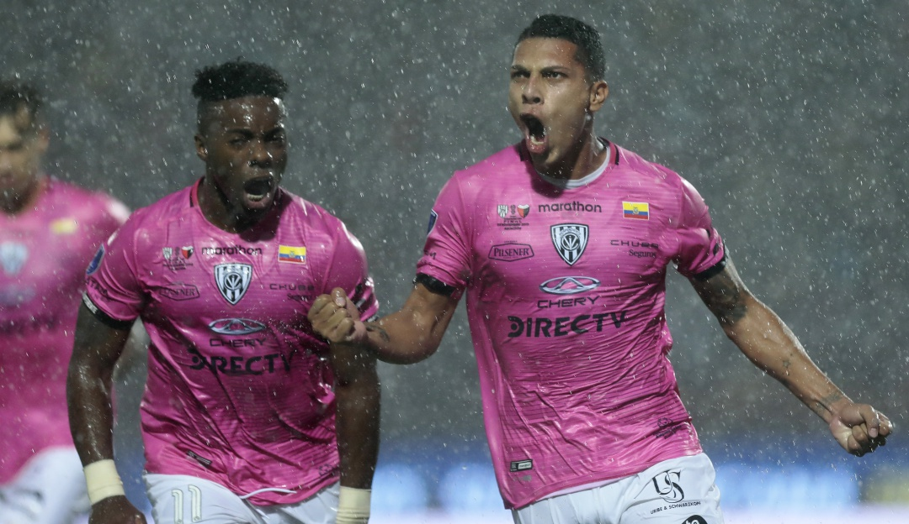
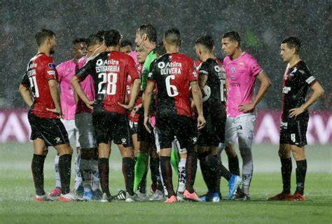
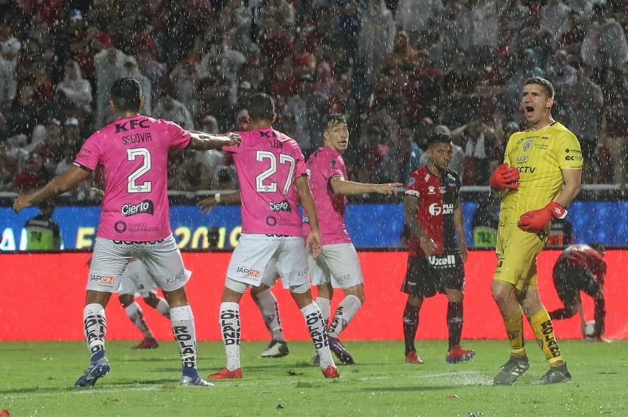

Champion of The Cup Sudamericana in 2019
Independiente del Valle, an Ecuadorian football team, was crowned champion of the Copa Sudamericana in 2019. It was a historic achievement for the club as it was the first time they won a continental title. In the final, Independiente del Valle faced Club Colón of Argentina.
The Independiente del Valle won 3-1, becoming champion of the Copa Sudamericana. It was an exciting and memorable moment for the club and its supporters.
The game began with light rain that intensified as the game progressed, and there was a thunderstorm in Asunción. Various sectors of the 'Nueva Olla' stadium were flooded. Both teams sought to control the ball and generate dangerous plays.
At minute 25, Luis Fernando León, a player from Independiente del Valle, took advantage of a Christian Pellerano cross and scored the first goal of the game. The team's technical director also celebrated the goal but warned his players about the importance of not neglecting the mark of José Luis Rodríguez, Colón's striker.

However, referee Rafael Claus decided to call off the match due to heavy rain. Despite the claims of the Independiente del Valle players, the referee did not change his decision. A 30-minute timeout was set to resume play.
Following the announcement of the suspension, it was reported that the showers and thunderstorms would subside in the next 30 to 60 minutes, allowing the match to resume. Although the rain did not stop completely, the teams returned to the field of play that was in better condition and continued the game.

In the second half, after four minutes, the referee called a penalty in favor of Colón for a foul by Anthony Landázuri. However, Jorge Pinos, Independiente del Valle goalkeeper, managed to stop the penalty kick taken by José Luis Rodríguez. The score was still 2-0 in favor of the Ecuadorians.
Near the end, Colón managed to score a goal through Olivera, which generated excitement in the game. However, Christian Dájome scored the third goal for Independiente del Valle in added time, securing a 3–1 win and proving his superiority in the match.
